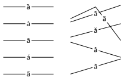
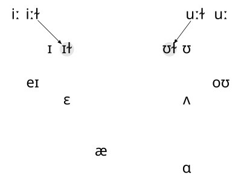

Things Vowels Do
Tone & Intonation
Tone
It’s also common to see tone transcribed with small superscript numbers between 1 and 5.
[ma35] vs [ma13]
Vowel Variation In Englishes
Back vowel fronting
| Goose | [ɨu ɨʉ y] | [uɫ] | Ghoul |
| Goat | [əʊ əʉ ø] | [oɫ] | Goal |
| Mouth | [aʊ æʊ ɛɔ] | Foul |
Vowel Variation in Englishes
Vowel Variation in Englishes
pre-l laxing
| “peat”, “pit” | [pʰit], [pʰɪt] | [pʰɪɫ] | “peel”, “pill” |
| “poot”, “put” | [pʰut], [pʰʊt] | [pʰʊɫ] | “pool”, “pull” |
Vowel Variation in Englishes

Vowel Variation in Englishes
“Short-a” ~stuff~
| “rap” | [ɹæp] | [ɹɛ̃ᵊm] | “ram” |
| “mat” | [mæt] | [mɛ̃ᵊn] | “man” |
| “back” | [bæk] | [bɛ̃ᵊŋ] | “bang” |
Vowel Variation in Englishes
Short vowel lowering
Vowel Variation in Englishes
[aɪ]
| pattern 1 | pattern 2 | pattern 3 | pattern 4 | pattern 5? | |
|---|---|---|---|---|---|
| “type” | [tʰɑɪp] | [tʰʌip] | [tʰɑɪp] | [tʰaːp] | [tʰʌip] |
| “time” | [tʰɑɪm] | [tʰɑɪm] | [tʰaːm] | [tʰaːm] | [tʰaːm] |
Vowel Variation in Englishes
The Southern Shift